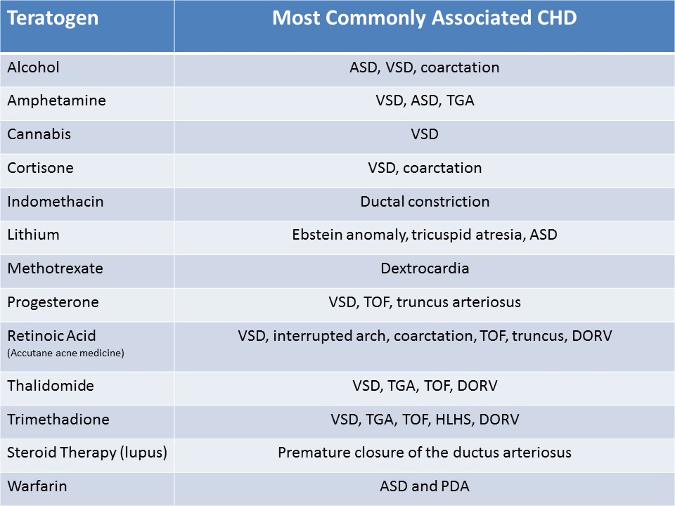
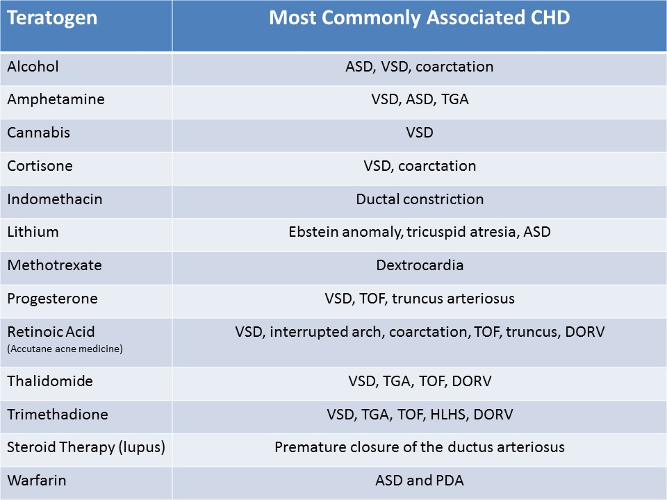
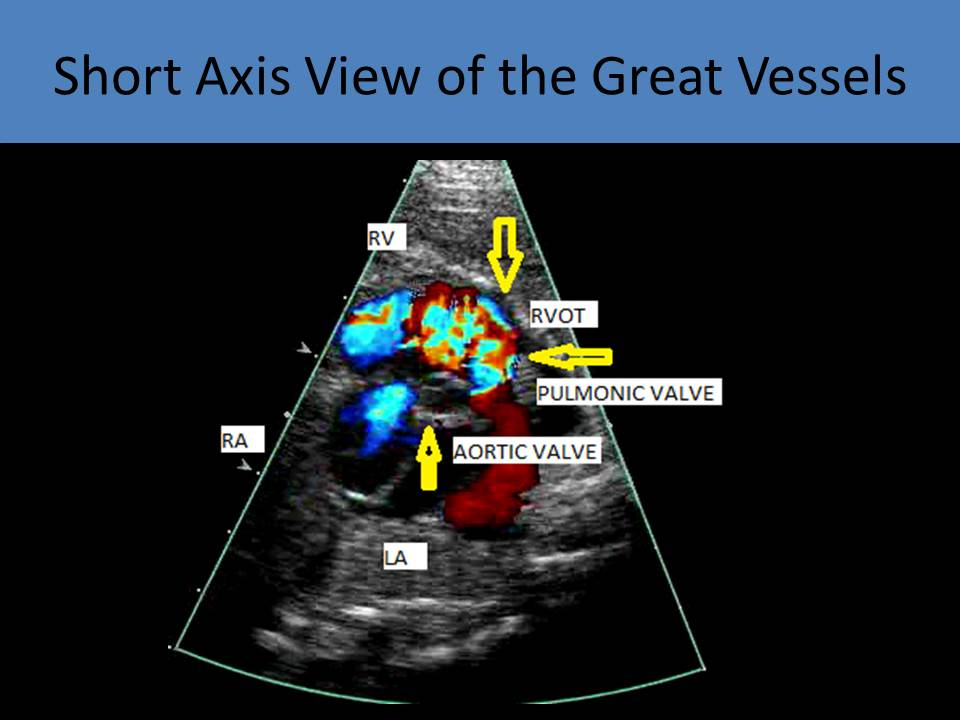

.jpg)
Fetal Echo Protocol and Clinical Indications
Congenital Heart Disease:
- Congenital heart disease (CHD) is defined as a gross structural abnormality of the heart or intrathoracic great vessels that is of functional significance
- CHD is the most common severe congenital abnormality identified in live births
- 8 in 1000 live births will demonstrate CHD
- In general, males have a higher incidence of cardiac anomalies and lethal cardiac anomalies
- Twins with monochorionic placentation have a higher risk of CHD
- Pregnancies developed using assisted reproductive technology are at a greater risk of CHD
- Early fetal demise and stillbirths are commonly the result of congenital heart defects
- Most infants born with CHD have no risk factors
- Abnormalities of Tissue Migration include defects in conotruncal septation, VSD, DORV, TOF, truncus arteriosus
- Abnormalities of Intracardiac Blood Flow include perimembranous VSD, HLHS, coarctation, interrupted arch, secundum ASD, pulmonary stenosis, HRHS
- Cell Death Abnormalities include muscular VSD and Ebstein anomaly
- Abnormalities of Extracellular Matrix include ostium primum ASD, inflow VSD, AVSD
- Abnormalities of Targeted Growth include cor triatriatum, PAPVR, TAPVR
- Looping and Situs Defects include situs inversus, polysplenia, asplenia
- Folic acid supplementation prior to conception has been shown to reduce the risk of CHD
Common Clinical Indications for Fetal Echo Exam:
- Family history of CHD #1
- Risk of defects increases if a sibling has CHD (2-4%)
- The more siblings with CHD, the greater the risk of the next fetus having CHD (2 siblings 10%)
- Risk of defects increases more if a parent has CHD
- Higher risk of CHD if mother (10-12%) has CHD than if father (4-6%) has CHD
- Maternal conditions
- Diabetes mellitus - most common cardiac defects are transposition of the great arteries, truncus arteriosus and tetralogy of Fallot; AVSD also shows a strong association with diabetes
- Gestational Diabetes - ventricular hypertrophy; fetus should be evaluated in the 3rd trimester
- Phenylketonuria - left sided defects such as truncus arteriosus, coarctation, HLHS; TOF is most common
- Maternal febrile illness is associated pulmonic stenosis, tricuspid atresia, conotruncal anomalies, and coarctation of the aorta are the most common defects
- Infection - usually associated with fetal cardiomyopathy
- Cytomegalovirus has been associated with restriction or obstruction of the foramen ovale
- Rubella - causes branch pulmonary stenosis, HRHS, VSD, TOF, tricuspid atresia, aortic stenosis and patent ductus arteriosus (postnatally)
- Parvovirus - causes hydrops and cardiomegaly; mother may present with fifth disease
- Systemic lupus erythematosus - most commonly seen with complete heart block
- Abnormal findings on routine OB ultrasound exam:
- Increased nuchal translucency (>3mm abnormal) or nuchal skin fold thickness (>6mm abnormal) is a marker for chromosomal anomalies (Trisomy 21); it is also associated with left sided defects such as HLHS, coarctation, aortic stenosis/atresia
- Nonimmune Fetal Hydrops - cause of hydrops may be related to CHD
- Significant polyhydramnios - other defects that are commonly associated with CHD may be present
- Persistent fetal arrhythmia - complete heart block is associated with CHD in 50% of cases
- Suspected cardiac defect seen on routine exam (40-50% of these cases do have CHD seen on fetal echo)
- Monochorionic placentation - higher risk of CHD and can have twin to twin transfusion syndrome; fetal echo is recommended for all monochorionic pregnancies
- Extracardiac congenital anomalies
- 25-45% of cases with CHD will also have other fetal defects
- Most common Central Nervous System (CNS) abnormalities with associated CHD = hydrocephalus and agenesis of the corpus callosum
- Most common Gastrointestinal Tract abnormalities with associated CHD = tracheoesophageal fistula, anorectal anomalies and duodenal atresia
- Most common Genitourinary Tract abnormalities with associated CHD = bilateral renal agenesis and horseshoe kidney
- Omphalocele is much more commonly associated with CHD than gastroschisis
- Diaphragmatic hernia 10-23% of cases have associated CHD
- Chromosomal anomalies
- Trisomy 13 and 18 - nearly 100% of cases have CHD
- Trisomy 21 - 40 to 50% of cases have CHD
- Teratogen exposure - see chart
 

- At about 12 weeks, an early transvaginal fetal echocardiogram can be performed (Crown rump length 60-70mm)
- Transvaginal approach is preferred over the transabdominal approach because higher frequency transducers can be used to evaluate structures that are closer to the transducer and provide improved image resolution
- Considered as adjunct imaging to a standard fetal echo performed in the 2nd trimester
- Identification of defects in the first trimester allows for earlier termination of the pregnancy, if warranted
- CANNOT perform PW Doppler in the first trimester due to increased beam intensity effects on developing tissue
- Reserved for those patients with an increased risk of CHD
- May be requested due to family history of CHD, increased nuchal translucency on early scan, abnormal karyotype
- Increased nuchal thickness is commonly associated with chromosomal defects and congenital heart defects
- The preferred fetal position for an early fetal echo is the low transverse position
- Protocol
- Identify cardiac position and axis (assessment of size is not relevant at this early gestation)
- Establish situs with transverse view and slide cephalad from there to obtain the remaining images
- Perform four chamber view, five chamber view, pulmonary artery bifurcation, three vessel and three vessel trachea view
- M-mode used to assess fetal rhythm
- The cardiac axis is 40-60 degrees before 16 weeks
- An abnormal cardiac axis identified in an early fetal echo is an accurate predictor of the presence CHD
- CHD that is detected in an early pregnancy is usually more complex and associated with chromosomal anomalies
- Reduce transducer frequency
- Use system controls to manipulate the image: spatial compounding, speckle-reduction filters, preprocessing and postprocessing, and harmonic imaging
- Image through a full patient bladder and/or use the umbilicus as an acoustic window
- Place the patient in the modified Sims position and scan from the lateral side of the abdominopelvic region (modified Sims position- the patient is lying on the left side with knees and elbows slightly bent, the right leg is placed in front of the left leg to allow the weight of the belly to rest on the bed)
- Occurs as the uterus compresses the IVC causing reduced venous return in the maternal circulation
- The patient may feel dizzy and nauseated
- Scanning the patient in the decubitus position relieves the pressure on the IVC and improves venous return.
- Fetal echo should be performed 18 to 22 weeks gestation
- Adequate frequency range 5 to 8 MHz
- Obese patients may require frequencies <5MHz
- Curvilinear or vector array transducer recommended; curvilinear is preferred due to the wider near field
- Place the patient in the supine position with the head of the bed raised slightly for comfort
- Obese patients should be placed in the left lateral oblique position to reduce the uterine pressure on the IVC and the risk of vasovagal response
- Identify the near field: highest field
- Identify the far field: lowest field on the screen
- Before evaluating cardiac structures, the fetal position must be determined and the left and right, anterior and posterior aspects of the fetus should be determined
- After documenting fetal position, the location and orientation of the heart should be determined
- Doppler evaluation should be performed using a 0 degree cursor angle proximal and distal to all 4 valves
- Flow should be assessed in the ductus arteriosus and through the foramen ovale
- Small sample volume is used unless assessing fetal rhythm
- During an echo on a normal fetus, you should identify several gross body movements and finer movements that demonstrate muscle tone; Absence of fetal movement/tone can indicate fetal distress or abnormal heart function; Fetal breathing is usually noted after 32-33 weeks
- Determine the fetal position by locating the fetal head in relationship to the cervix (transverse, breech or cephalic)
- Determine the fetal lie by obtaining a sagittal view of the fetal spine and identifying the position/axis of the fetal spine related to the maternal spine (longitudinal, transverse or oblique lie)
- Turn transverse from the sagittal view to obtain a transverse view of the fetal abdomen
- Document the position of the aorta and IVC to determine left/right side of the fetus - more reliable than noting stomach position
- Other structures identified to assist in documenting fetal situs: stomach, liver, spleen, portal sinus, umbilical vein, gallbladder
- If a transverse fetal abdomen image is demonstrated with a sagittal probe placement on the uterus, the fetus is either head right or head left
- The general rule on evaluating a transverse fetal abdomen image obtained with a sagittal uterine view, if the spine is at 12 o'clock and the stomach is at 3 o'clock then the fetus is transverse head maternal right
- If the spine is at 12 o'clock and the stomach is at 9 o'clock, then the fetus is transverse head maternal left
- If the fetal spine is not in the 12 o'clock position, visualize rotating the fetus until the spine is at 12 o'clock and note the position of the stomach
- If a transverse abdomen image is demonstrated with a transverse probe placement on the uterus, the fetus is either breech or vertex
- The general rule on evaluating a transverse fetal abdomen image obtained with a transverse uterine view, if the spine is at 12 o'clock and the stomach is at 3 o'clock then the fetus is vertex
- If the spine is at 12 o'clock and the stomach is at 9 o'clock then the fetus is breech
- If the fetal spine is not in the 12 o'clock position, visualize rotating the fetus until the spine is at 12 o'clock and note the position of the stomach
Cordes Method:
- Used to assess laterality of the fetal body and head
- The head of the fetus and sagittal plane of fetal body should be located
- With the fetal head on the right side of the screen, the transducer is oriented parallel to the fetal sagittal plane
- The spine of the fetus is used to identify the sagittal plane
- When the transducer is positioned parallel to the fetal cranial-caudal axis, the side of the transducer toward the fetal head can be designated the “top” of the transducer
- Then the sonographer should rotate the transducer clockwise 90 degrees
- The fetus’ left side is on the right of the screen, and the fetus’ right side is on the left of the screen
Cordes Method
Protocol Guidelines:
- American Institute of Ultrasound in Medicine (AIUM) offers published guidelines for fetal echo which are endorsed by the American College of Radiology
- Contain recommendations for appropriate indications, personnel qualifications and responsibilities, examination methods, required image documentation and storage
- The 4 chamber, RVOT and LVOT views are now a required part of a routine OB ultrasound
- CHD that is suspected on a routine OB ultrasound yields the highest number of actual positive cases, as compared to all other exam indications (highest sensitivity)
Four Chamber View:
- Most useful beginning point for fetal heart imaging
- Should be scanned down through the heart to the level of the stomach, inferior vena cava, and the aorta to confirm that the stomach and the heart are on the same side of the fetus
- The stomach should be more posterior than the heart and fluid filled
- Heterotaxy or congenital heart disease is indicated if the stomach is centered or on the opposite side of the heart
- Disproportion of ventricles can be seen due to coarctation, growth restriction, total anomalous pulmonary venous return

- Transverse view of the fetal chest with the apex pointing directly toward or away from the transducer
- The septum is perpendicular to the face of the transducer and parallel to the beam
- Normal size: 1/3 of thorax, apex points left, interventricular septum at angle of 45 degrees
- Normal right and left atria with equal size
- Two ventricles with equal size and good function
- Two atrioventricular valves: insertion of tricuspid valve is slightly inferior (towards the apex)
- Tricuspid valve is slightly larger than mitral valve
- The septal and anterior tricuspid leaflets are visible on this view
- Confirm the crux and ventricular septum are intact
- Flap valve over the foramen ovale in left atrium can be seen; right to left shunting
- The right ventricle has the moderator band
- The interventricular septum is NOT evaluated in this view because it is parallel to the sound beam
- Systemic veins (superior vena cava, inferior vena cava, coronary sinus) drain into the right atrium
- Pulmonary veins drain into the left atrium
- The descending aorta is noted anterolateral to the spine
- The azygos vein is imaged directly anterior to the spine, to the right of the aorta
- Immediately anterior to the aorta, the espohagus can be visualized as an echogenic structure
- When the fetus swallows, the fluid can make the esophagus appear as another circular vessel
- Less than 2mm of pericardial fluid surrounding the heart is considered a normal finding
- Doppler evaluation of the pulmonary veins - sample volume should be placed parallel to blood flow at the junction of the left atrium and pulmonary veins; flow pattern reflects left atrial hemodynamics
- The best view to obtain the mitral and tricuspid valve inflow Doppler patterns because the blood flow through the valves is parallel to the beam
- Doppler assessment should be performed during fetal apnea and multiple samples should be obtained
- MV/TV velocities = the cursor is placed immediately distal to the valve leaflet tips for Doppler sampling of the inflow pattern using a 0 degree angle
- MV/TV waveforms have two phases (biphasic)
- Diastolic filling = E velocity; Atrial contraction = A velocity
- Normal fetus will demonstrate a higher A velocity than the E velocity; E/A ratio less than 1
- MV/TV insufficiency = the cursor is placed immediately proximal to the valve leaflet tips for Doppler sampling with a 0 degree angle
- Angle anterior to obtain the 5 chamber view used to Doppler the aortic valve; sample before and after the valve
- Transverse view of the fetal chest with the ultrasound beam perpendicular to the cardiac septum (for the best reflection = improved visualization)
- Can be used to assess heart location, size and position
- Best view to assess and compare chamber sizes
- Best view to evaluate the interventricular septum for defect with color Doppler
- Best view to evaluate size and flow across the foramen ovale
- Normal foramen ovale diameter should be about the same as the aortic root diameter
- Interventricular thickness measurement obtained; normal <5mm at end-diastole
- The 2-D measurement of annulus of the atrioventricular valves can be obtained in ventricular diastole
- M-mode is performed to evaluate size and motion of the chambers
- M-mode cursor is placed through both atria or both ventricles for size assessment
- M-mode cursor is placed across an atrial wall and a ventricular wall at the same time to assess for arrhythmia
- NO DOPPLER of valves in this view because blood flow is perpendicular to the beam
- Superior pulmonary veins can be identified at the left atrium in this view; requires low velocity scale settings compared to valvular settings
- Pulmonary vein Doppler tracing represents the pressure changes in the left atrium; normally triphasic
- Most of the remaining heart views are obtained by angling toward the right fetal shoulder from this view
Normal 4 chamber view
Cardiac Ratio:
- Ratio of cardiac circumference or area to the thoracic circumference
- Normal C/T circumference ratio: less than 0.5
- Transverse view of the fetal chest at the level of the four chamber heart with a measurement of the distance around the fetal chest
- Trace around the chest along the ribs NOT the outer skin line
- If skin thickening is present, the skin thickness should not be included in the measurement or it will be inaccurate
- Normal C/T area ratio: less than 0.3
- Defined as anterior-posterior thymic measurement to the intrathoracic mediastinal diameter measured in the three-vessels-trachea view
- Fetuses with heart defects showing a low ratio ( <0.43) can be considered at high risk of having 22q11 deletion
- Tilt anterior from the apical four chamber view to see the aorta arise from the left ventricle
- Used to evaluate proper orientation of the aorta and to assess the aortic valve with Doppler
- Obtains views of perimembranous and muscular portion of the septum, aorta,
- Posterior aortic root - anterior mitral valve fibrous continuity
- Anterior aortic root - ventricular septal fibrous continuiuty
- A wide angle should be displayed between the direction of the interventricular septum and the anterior wall of the aorta (not demonstrated in conotruncal abnormalities)
- The best view to obtain the left ventricular outflow Doppler pattern
- PW Doppler should be performed above (aorta) and below the valve (LVOT)
- Average normal PSV across the aortic valve is 70cm/s
- The normal monophasic waveform of the aortic valve indicates the vascular resistance of the upper body of the fetus
- Peak velocity and acceleration time of the aortic valve increase with gestational age
- Aortic valve annulus needs to be measured at ventricular systole
- Normal foramen ovale diameter should be about the same as the aortic root diameter (+ or - 1mm)
- The diameter of the aorta is usually slightly smaller than the pulmonary artery diameter
- The two superior pulmonary veins can be visualized entering the left atrium in the five chamber view
- Index of global ventricular function
- Especially helpful when IUGR or twin-twin transfusion is suspected
- IVRT + IVCT / Ejection Time = MPI
- Align the angle of insonation with the ascending aorta (less than 20 degrees from parallel)
- Obtained using a Doppler sample of the mitral and aortic valve
- Place the cursor between the MV and AV in the upper left ventricle
- Open the sample gate to 3-4mm sample size to cover the mitral and aortic leaflets
- The optimal waveform will demonstrate opening and closing valve clicks
- Reduce the gain and increase the wall filter to optimize the waveform
- Increased sweep speed also improves the measurement technique
- Measure the IVCT - time from mitral valve closure to aortic valve opening
- Measure the IVRT - time from aortic valve closure to mitral valve opening
- Measure the Ejection Time - time from aortic valve opening to closing
- Normal values 0.28-0.44
- At least three samples should be taken to confirm accurate measurements
- Systolic dysfunction = prolonged isovolumic contraction time (IVCT)
- Diastolic dysfunction = prolonged isovolumic relaxation time (IVRT)
- Arrhythmias distort the MPI
Long Axis View of the Left Ventricle/Aorta:
- From the subcostal four chamber view, angle toward the right fetal shoulder
- First view encountered when angling toward the right shoulder from the subcostal 4 chamber view
- Aorta sweeps anteriorly, superiorly, and rightward from the left ventricle
- Evaluate the continuity of the anterior aortic wall and the interventricular septum (evaluate overriding aorta)
- Evaluate the continuity of the posterior aortic wall and the anterior mitral leaflet
- The aortic root is slightly smaller than the pulmonary artery root in the fetus
- The aortic annulus is measured in this view
- If the cursor angle is appropriate, the aortic valve can be evaluated with PW Doppler (Normal PSV 120cm/s)
- Views of the perimembranous and muscular septum portions are obtained to assess for defect
- Fetal heart rhythm can be evaluated by placing the PW Doppler cursor with a wide sample volume between the aortic and mitral valve
- Fetal heart rhythm can also be evaluated by placing an m-mode line across an atrium and ventricle simultaneously
Long Axis View of the Pulmonary Artery:
- From the long axis view of the aorta, rotate the transducer toward the right shoulder
- The pulmonary artery courses cephalad, leftward and posteriorly from the right ventricle
- The path of the pulmonary artery should cross over the aorta (great vessels should criss cross)
- Pulmonary artery diameter can be measured in this view
- Pulmonary valve can be evaluated with PW Doppler in this view (Normal PSV 120cm/s)
- The cursor should be distal to (stenosis) and proximal to the valve (insufficiency)
- Peak velocity and acceleration time of the pulmonic valve increase with gestational age
- Acceleration time is shorter in the pulmonary artery than in the aorta
- The normal monophasic waveform of the pulmonary valve indicates the vascular resistance of the lower body and placenta
- Further rightward rotation of the transducer will produce a sagittal view of the fetal chest with a short axis view of both ventricles
- From the long axis view of the left ventricle, rotate transducer 90 degree clockwise
- Right ventricle is located anteriorly (confirm by identifying the moderator band)
- Left ventricle is located posteriorly
- Two papillary muscles(anterior lateral, posterior medial) in the left ventricle
- Evaluate muscular septum for defect
- Evaluate the ventricular size and rhythm
- Compare size of ventricles
- Measure ventricular wall thickness
- Preferred view to demonstrate possible pericardial fluid
- Angle transducer towards the left side of the fetus from the short axis of the left ventricle
- In the normal heart, the aorta will appear circular with the pulmonary artery coursing anterior to it
- Pulmonary artery can be seen bifurcating into the ductus arteriosus and right pulmonary artery
- Aortic, pulmonic and tricuspid valves can be seen in this view
- Best view to evaluate the tricuspid and pulmonary valves for stenosis and insufficiency (cursor above and below the valve)
- M-mode cursor through the aorta and left atrium to evaluate fetal rhythm

View of the Transverse Aortic Arch:
- Longitudinal view of the fetal chest with the transducer obliqued to an angle between the left shoulder and the right hemithorax
- Identify the branches from the aortic arch to differentiate from the ductal arch
- Aortic arch has 3 branches - innominate artery, left carotid artery, left subclavian artery
- Aortic arch is described as having a candy cane appearance
- Diameter of the arch can be obtained
- Color and PW Doppler can be used to assess for possible coarctation
- The thymus is best demonstrated in this view in the anterosuperior mediastinum
- Move to a more sagittal plane from the view of the aortic arch
- The aortic arch is more superior than the ductus
- Slight caudal tilt to the left from the view of the arch to see the ductus
- Can also view ductus by angling from the short axis view of the great vessels
- The ductal arch is composed of the pulmonary artery, ductus arteriosus and descending aorta
- Ductal arch is described as having a hockey stick appearance
- Arch and ductal arch are equal in size
- Blood flows in the same direction in the arch and the ductus
- PW Doppler used to assess flow velocity in ductus
- Has the highest velocity flow of all cardiac structures in the normal fetus
- Elevated systolic velocity seen with RVOT obstruction, anemia and high cardiac output
- Decreased systolic velocity seen with IUGR
- Flow reversal in the ductus is associated with severe right ventricular outflow tract obstruction
Aortic arch
Ductal arch
Aortic and ductal arch
Sagittal View of the Systemic Veins:- AKA Bicaval view
- Can be obtained from the aortic arch view - slide transducer from the left fetal chest to the right fetal chest
- Can be obtained from the 4 chamber view, turn the transducer 90 degree
- Superior vena cava and inferior vena cava identified entering into the right atrium
- Doppler of the vena cava can be performed in this view
- IVC Waveform
- Demonstrates a triphasic waveform with reversal of flow in late diastole
- First phase = ventricular systole
- Second phase = early ventricular diastole
- Third phase = late ventricular diastole
Three Vessel View:
- Cranial to the origin of the aorta (five chamber view)
- Slide the transducer cephalad from the apical four chamber view
- Pulmonary artery (largest, most superior and anterior, left) , aorta ( middle), superior vena cava( right, smallest vessel, posterior) are obtained
- Allows for comparison of size of fetal vessels
- One of most informative views with Color Doppler because it allows for assessment of the superior vena cava, the aorta, and the main pulmonary artery
- Normally the pulmonary artery and aorta make a V formation that points to the posterior chest wall
- Each structure is located slightly posterior to the other
- Pulmonary artery anterior to aorta, aorta anterior to superior vena cava
- Pulmonary artery crosses anterior to the aorta
- Pulmonic annulus should be measured in systole
- Pulmonary artery divides into the right pulmonary artery and ductus arteriosus
- If a 4th vessel is identified to the left of the main pulmonary artery, a persistent left superior vena cava should be suspected
- An absent pulmonary artery indicates pulmonary atresia, RVOT obstruction or severe pulmonary stenosis
- A dilated aorta = severe aortic stenosis
- A dilated pulmonary artery = severe pulmonary stenosis
- Normal SVC with only a single normal sized great vessel = transposition
- Normal SVC with only a single dilated great vessel = stenosis/atresia of the missing vessel
- Dilated SVC = interrupted IVC, supracardiac TAPVR and AVM in the brain
Three Vessel Trachea View:
- Angle cephalad from the 3VV
- The trachea is used to determine arch sidedness
- Ductal arch is the largest vessel
- The aortic arch is in the middle and slightly smaller than the ductal arch; SVC most inferior
- The aortic arch and ductal arch should be seen on the left of the trachea
- Color Doppler should demonstrate flow moving in the same direction in the aortic and ductal arches
- A right aortic arch courses to the right side of the trachea
- A narrow aortic arch can indicate coarctation
- A narrow aortic arch with flow reversal indicates left heart hypoplasia, severe aortic stenosis or aortic atresia
Left Brachiocephalic Vein View:
- Angle cranial and oblique from the 3VT view
- Left brachiocephalic vein courses anterior to the aortic arch and posterior to the thymus gland
- Dilated left brachiocephalic vein can indicate supracardiac TAPVR or Vein of Galen aneurysm
Ductus Venosus:
- Connects the umbilical vein to the inferior vena cava
- High velocity stream
- Normal triphasic pattern
- Forward flow throughout the cardiac cycle in the normal fetus
- Displays the pressure gradient between the ductus venosus and the right atrium
- With cardiac dysfunction, increased afterload or preload results in an elevated pulsatility of the venous blood flow velocity
- The majority of ductus venosus blood crosses directly through the foramen ovale
- Visualized in an axial plane of the upper abdomen on a midsagittal view of the abdomen
- Usually demonstrates aliasing on color Doppler evaluation
- Peak systole and peak diastole equal in velocity
- Continuous forward flow during atrial contraction
- Flow reversal with atrial contraction indicates increased resistance to flow

Sagittal View of the Fetal Abdomen:
- Used to follow great vessels distally
- Evaluate possible interrupted IVC
- Assess abdominal aorta and IVC with PW Doppler
- The abdominal aorta will demonstrate a monophasic flow pattern in a normal fetus
- The IVC will demonstrate a triphasic flow pattern with a small amount if flow reversal in late diastole in a normal fetus